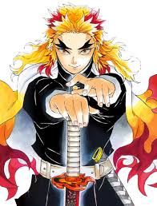

Jair Bolsonaro é um capitão reformado do Exército, político de extrema-direita e ex-presidente do Brasil (2019-2022) que ascendeu ao poder com uma agenda conservadora social (defesa da família e valores cristãos) e liberal na economia (Reforma da Previdência, privatizações). Sua trajetória é marcada por um estilo polarizador, oposição ao "sistema" e intenso uso das redes sociais, mobilizando uma forte base de apoio apelidada de "bolsonarismo".